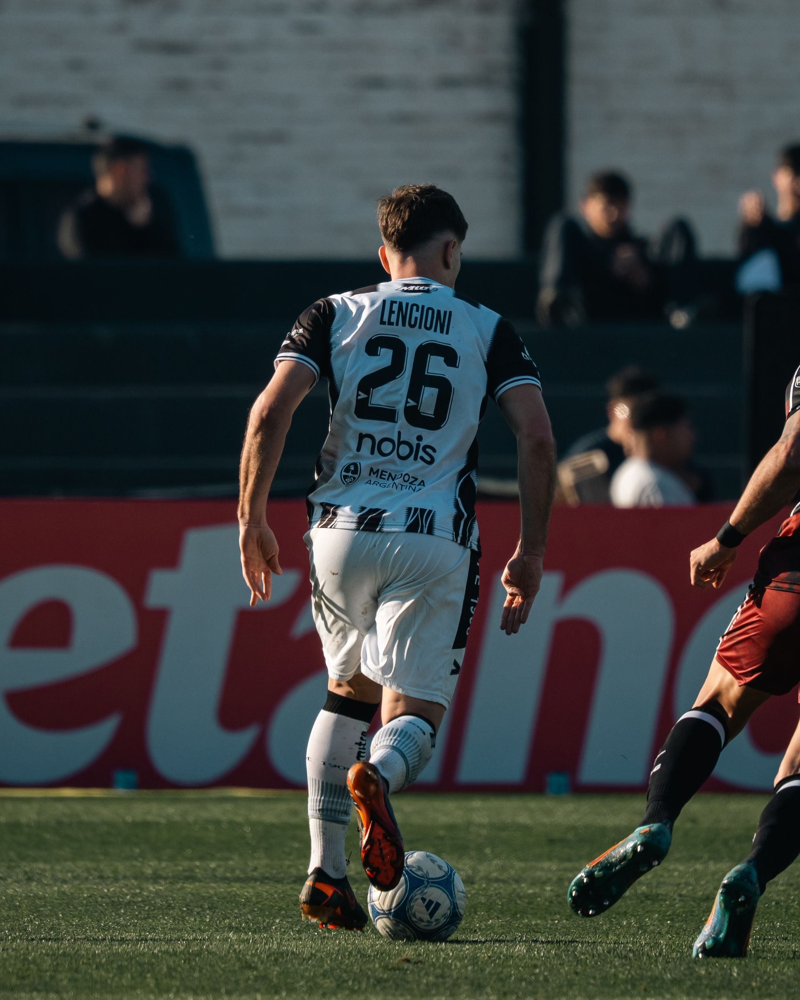
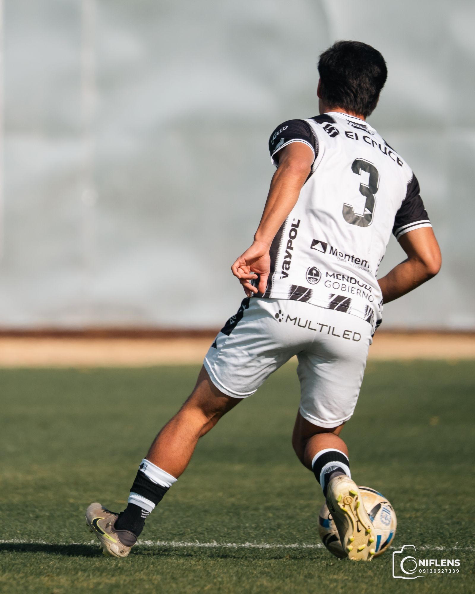

Football Photography & Visual Media
Every moment. Every player. On record.
We capture the moments that define football. Matchday action, training ground work, individual player portraits and player-focused highlight videos, produced to a professional sports-media standard.
Services
Professional football imagery, from full-frame action to quiet moments away from the ball.
Complete coverage of your fixtures. Key incidents, celebrations, and the story of the game.
Document sessions with clean, consistent photography the academy, club and players can use.
Individual portraits and profile imagery built for player pages, recruitment and social media.
Player highlight edits, match cuts and social-ready clips, cut tight and built to be rewatched.
Every shoot comes with a private gallery. Players and clubs select their photos and download the full-resolution files with a secure single-use code.
Selected Work
A short look at recent work. See the full portfolio for more.

About NIFLENS
NIFLENS is a football photography and visual media service built around one thing: the game. We work with clubs, academies and individual players to produce imagery and video that respects the sport and the people in it.
No over-produced stock feeling. No gimmicks. Just sharp, honest coverage of training sessions, matchdays and the players behind them.
Photo Delivery
If NIFLENS has photographed you, your team or your session, your photos arrive through a private gallery link. No account needed.
NIFLENS sends you a private gallery link with all the photos from your session.
Tap the photos you want. Your selection count is shown as you go.
Add your name and contact, then enter the download code NIFLENS sends you.
Your selected photos become downloadable, individually or as one ZIP, in original quality.
Next fixture?
Book matchday coverage, a training session shoot, player portraits or a highlight edit.
Work With NIFLENS